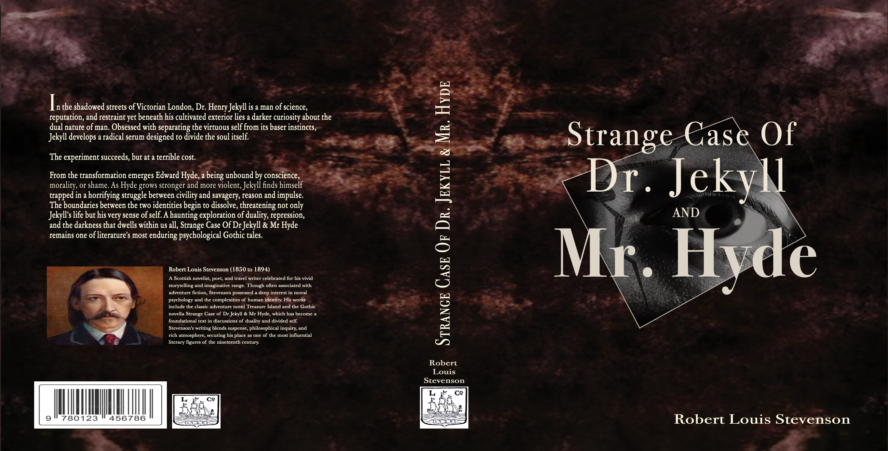
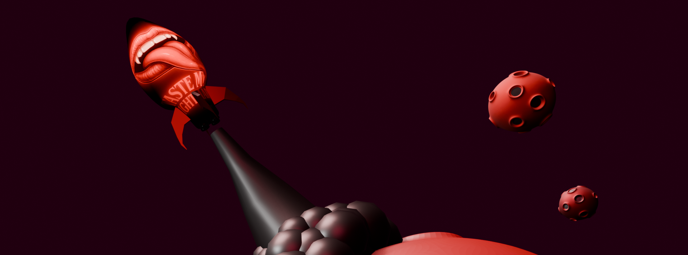

Featured Projects
Book Cover Process Page

A responsive webpage documenting my creative process while designing the cover for Strange Case of Dr Jekyll & Mr Hyde The page highlights my design decisions, inspiration, and final outcome using HTML and CSS.
Product Showcase

A clean product landing page built using semantic HTML and CSS. This project demonstrates layout design, typography, spacing, Google Fonts, and responsive design while showcasing a wonderful Sony product.
Blender Renders

A collection of original Blender projects exploring surreal environments, dark fantasy, and futuristic design concepts. These renders reflect my creative identity through my brand, Taste My Nightmare.
View ProjectAbout Me
Designing Nightmares Into Sweet Dreams
My name is Ashelic Rose, and I am a multidisciplinary creative passionate about combining storytelling, design, and immersive digital experiences. As a Web & Graphic Design student, I enjoy creating projects that balance strong aesthetics with practical usability while continually expanding my technical skills. I look forward to my future in 3D modeling and so much more!
My creative style is inspired by dark fantasy, surrealism, horror, and futuristic visuals. Through graphic design, web development, and 3D modeling, I enjoy building unique experiences that encourage curiosity and imagination. Every project is an opportunity to experiment, improve my craft, and bring ideas to life through design. So..
Welcome to MY NIGHTMARE
Contact
Interested in my work or want to connect?
Feel free to reach out through email or my linkedin below.